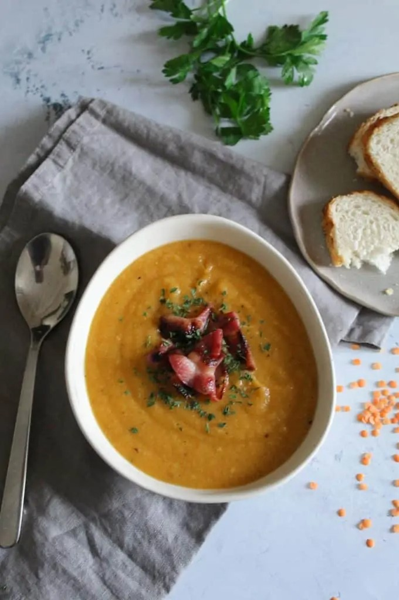

приготовление:
-
Заранее сварить 2,5 литра овощного или куриного бульона.
-
Кастрюлю поставить на огонь, налить масла, порезать 100–150 гр. копченого бекона, обжарить слегка. Очистить и нарезать 2 луковицы, 2 морковки и 1 брюкву. Сначала добавить жариться лук, поготовить минут 5, потом добавить остальные овощи, накрыть крышкой и потушить 10 минут. В это время промыть несколько раз 200-250 гр. дробленой красной чечевицы. Залить овощи бульоном, добавить чечевицу, посолить, поперчить (белый перец предпочтительнее), добавить приправы по желанию, например, розмарин, и варить 25-30 минут.